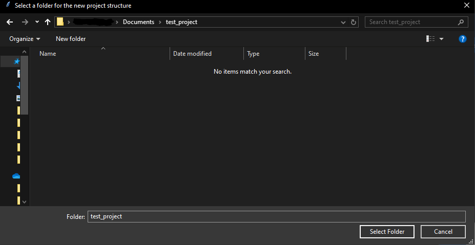

create_project.RmdA clean environment to organise code, reports, data sets and documentation is crucial in large analytical projects.
The create_project function automatically creates a
clean template environment, along with an R project file–anchoring
working directories to enable simultaneously working across multiple
projects. It works across all platforms–Windows, Mac, and Linux.
This vignette walks though what to expect in this project.
library(WAACHShelp) # Let's load the WAACHShelp packageThe create_project has a small set of arguments:
project_nameTRUE.
datareportsoutputdocsSuppose we have just created an empty folder for a project wherever we like (could be local, in a network drive, etc.).
Create a folder for our project contents to sit.
For the sake of this example, I have created a folder called “test_project” in Documents.
test_project in
My DocumentsNow we can run our function in R. This can be done from a null project, or from terminal.
I have left all of the data, reports,
output, arguments as default (TRUE). This
means they will all be created.
create_project(project_name = "test_project")This opens the following window:

Navigate to the test_project folder we created
earlier.